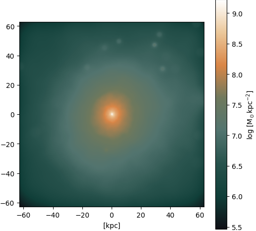
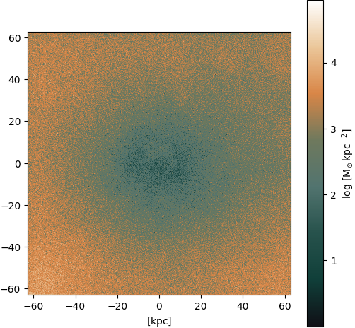
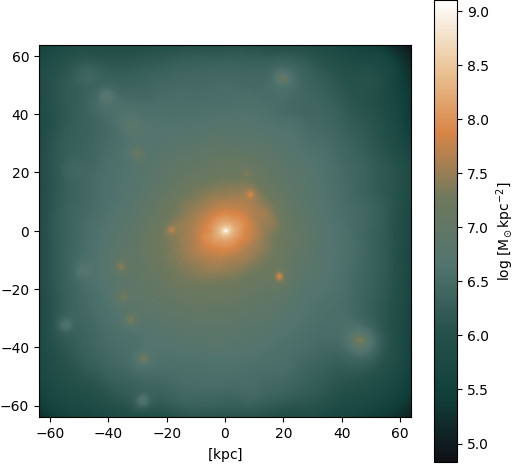
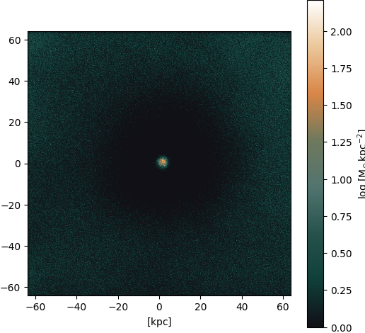

ZHAW SKACH
Group Meeting
2024/08/22 Winterthur
Group Meeting
2024/08/22 Winterthur
Galactic Alchemy
- Part I:
- GANs vs Diffusion models
- conclusions so far:
- main case: gas -> dark matter
- attention is all you need
- diffusion models tend to give higher quality images, but also more hallucinations
- GANs (comparable?) quality, faster inference, harder to train, less hallucination
- TODO: "astro-analytics" + paper writing
Diffusion model: Example 1

Figure 1: Input

Figure 2: Output

Figure 3: Ground truth
Diffusion model: Example 2

Figure 4: Input

Figure 5: Output

Figure 6: Ground truth
Diffusion model: Example 3

Figure 7: Input

Figure 8: Output

Figure 9: Ground truth
Diffusion model: Comparison to Pix2Pix + Attention
Problem?

Figure 10: GAN

Figure 11: Ground truth

Figure 12: DDPM
Diffusion model: Problems finding sampling steps

Figure 13: Input

Figure 14: Output

Figure 15: Ground truth
Diffusion model: Sampling steps 400 vs 1200

Figure 16: Ground truth

Figure 17: Output (400)

Figure 18: Output (1200)
Diffusion model: Plausible Hallucinations?

Figure 19: Input

Figure 20: Output

Figure 21: Ground truth
Cherry-picked?
Yes… but!

Figure 22: Ground truth

Figure 23: Output

Figure 24: Ground truth

Figure 25: Output